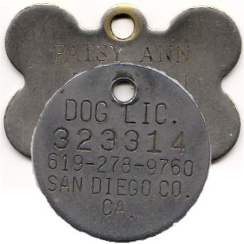

Resources
Useful Information
Dog License Info
Licenses may be obtained or renewed at Quincy City Hall or by mail:
City of Quincy City Hall
City Clerk's Dept. - Dog Licenses
1305 Hancock Street
Quincy, MA 02169
617-376-1000
Mon-Fri 8:30 am to 4:30 pm
The fee for a Quincy Dog License is $10.00 per dog. Please provide a current rabies vaccination certificate. Checks may be made payable to: The City of Quincy
City of Quincy Animal Control Officer:
617-376-1364

Certified Professional Dog Trainers in Massachusetts
South Shore
Donna’s Do Right DogsDonna Culbert
(781) 340-3365
Serving Weymouth, Norwell and Hingham areas
Clear Skies Dog Training and Evaluation, LLC
Maura Porter
(781) 724-5610
Serving the South Shore, Boston, MetroWest and Southeast Region of Massachusetts
South West
Performance PlusNancy Droukas
(508) 821-7587
Serving the Taunton and Raynham area
Golden Ridge Farm
Pauline Hoegler
(508) 828-0282
Cape Cod
Happy Dog TrainingJoanne Lekas
(617) 448-7447
Serving the West Yarmouth area
For the Love of Dogs
Janet Vera
(617) 699-0309
City of Quincy Animal Control Office
Monday through Saturday
8:30 a.m. to 9:30 a.m.
3:30 p.m. to 4:30 p.m.
56 Broad Street
Quincy, MA. 02169
Call: 617-376-1364